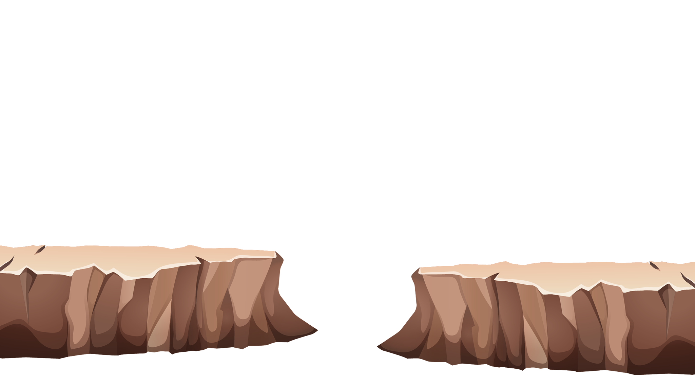
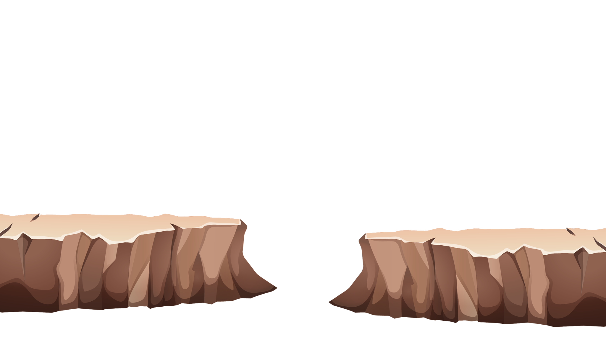
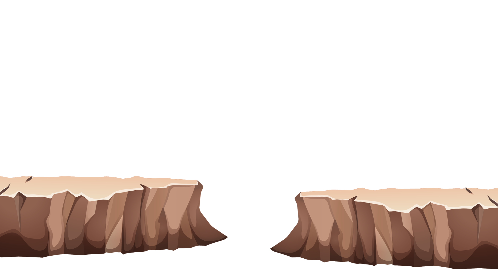
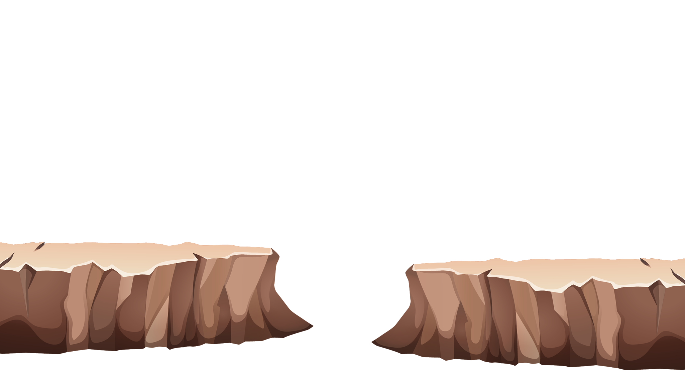

Agglomération
En quelque mots


 Explore

Explore

 Explore

Explore

Le territoire du Sud Basse Terre abrite les principales richesses naturelles de l’archipel avec la présence du Parc naturel régional, le volcan de la soufrière et une surface littorale attractive et variée entre côte-au-vent et côte-sous-le-vent.
La nature et la biodiversité, sous toutes ses formes, caractérisent ce territoire qui accueille plus de la moitié des visiteurs de la Guadeloupe.
La destination « Grand Sud Caraïbe », caractérisée par des paysages exceptionnels très diversifiés (forêts, plaines alluviales, marécages, montagnes, plages…), par une couverture verte exceptionnelle dans les petites Antilles et par un climat tropical, se voit également traversée par plusieurs rivières et cours d’eau. On peut noter l’importance du littoral maritime et un port pour la quasi-totalité des communes de l’agglomération.


Avec sa géographie particulière et son climat tropical, le territoire se voit exposé à de nombreux risques naturels. Aussi, l’agglomération et les communes membres se mobilisent pour préserver les espaces naturels, favoriser le développement d’une économie maîtrisée et maintenir une agriculture raisonnée, de proximité et valorisant les cultures locales. L’agglomération se mobilise également aux côtés des communes membres pour promouvoir un écotourisme et des formes de découvertes respectueuses de l’environnement autour de l’authenticité, des traditions locales mais également en permettant de découvrir une très riche offre patrimoniale et de nombreux événements sportifs et de loisirs. A ce titre, le territoire accueille la commune chef-lieu du département, Basse Terre, ville d’art et d’histoire,
Avec sa géographie particulière et son climat tropical, le territoire se voit exposé à de nombreux risques naturels. Aussi, l’agglomération et les communes membres se mobilisent pour préserver les espaces naturels, favoriser le développement d’une économie maîtrisée et maintenir une agriculture raisonnée, de proximité et valorisant les cultures locales. L’agglomération se mobilise également aux côtés des communes membres pour promouvoir un écotourisme et des formes de découvertes respectueuses de l’environnement autour de l’authenticité, des traditions locales mais également en permettant de découvrir une très riche offre patrimoniale et de nombreux événements sportifs et de loisirs. A ce titre, le territoire accueille la commune chef-lieu du département, Basse Terre, ville d’art et d’histoire,